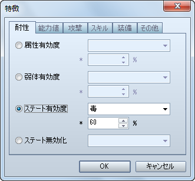
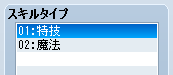

戦闘において、敵からの狙われやすさに関係するパーティ内での位置関係ですが、VX Ace では廃止されています。その代わり、敵からの狙われやすさを設定することが出来ます。
［アクター / 職業］特徴 − 能力値 − 特殊能力値 − 狙われ率
| VX での設定 | VX Ace での設定 |
| 前衛 | 100% |
| 中衛 | 75% |
| 後衛 | 50% |
VX Ace では、装備品一つ一つに装備出来るかどうかを設定するのではなく、「剣」や「盾」といったタイプ（種類）ごとに装備出来るかどうかを設定するように変更されました。
［職業］特徴 − 装備 − 武器タイプ装備 / 防具タイプ装備

属性を伴う攻撃がどれだけ有効かを設定する方法です。
［アクター / 職業］特徴 − 耐性 − 属性有効度

| VX での設定 | VX Ace での設定 |
| A | 200% |
| B | 150% |
| C | 100% もしくは設定しない |
| D | 50% |
| E | 0% |
| F | 廃止 |
ステートの付加がどれだけ成功するかを設定する方法です。
［アクター / 職業］特徴 − 耐性 − ステート有効度

| VX での設定 | VX Ace での設定 |
| A | 100% |
| B | 80% |
| C | 60% |
| D | 40% |
| E | 20% |
| F | 0% |
 VX Ace では、スキルを使用する戦闘コマンドが VX のように［スキル］ではなく、「特技」や「魔法」といった［スキルタイプ］ごとに分かれて表示されます。また、メニュー画面でも［スキル］コマンドを選んだ後で、［スキルタイプ］を選択するようになっています。
VX Ace では、スキルを使用する戦闘コマンドが VX のように［スキル］ではなく、「特技」や「魔法」といった［スキルタイプ］ごとに分かれて表示されます。また、メニュー画面でも［スキル］コマンドを選んだ後で、［スキルタイプ］を選択するようになっています。
ですので、スキルを使用するコマンドをオリジナルの名称にしたい場合は、オリジナルの［スキルタイプ］を作成してください。
［用語］スキルタイプ

また、アクターがスキルを覚えていても、そのままでは［スキルタイプ］がコマンドとして表示されませんので、表示させたい（使いたい）スキルタイプを特徴で設定してください。
［アクター / 職業］特徴 − スキル − スキルタイプ追加